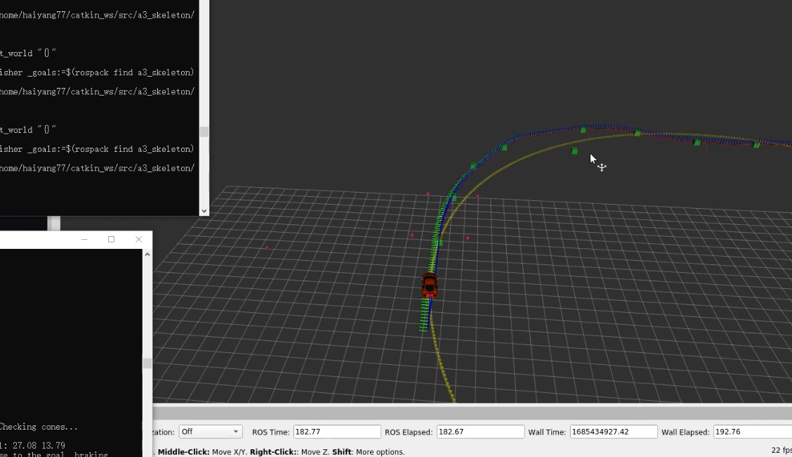
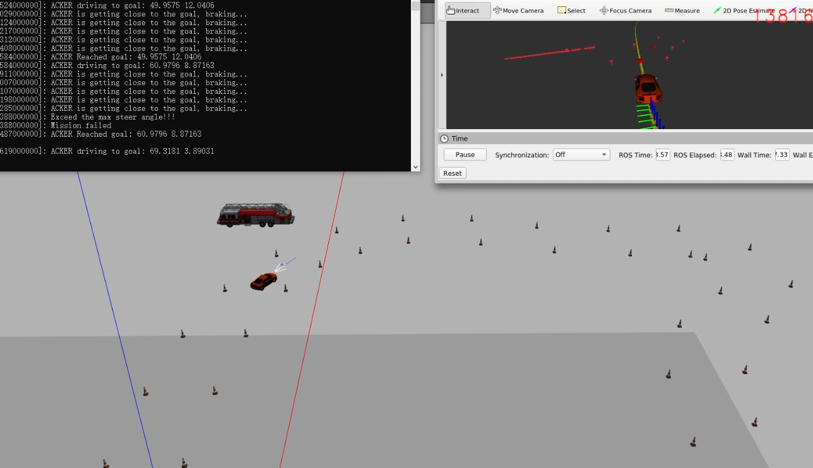
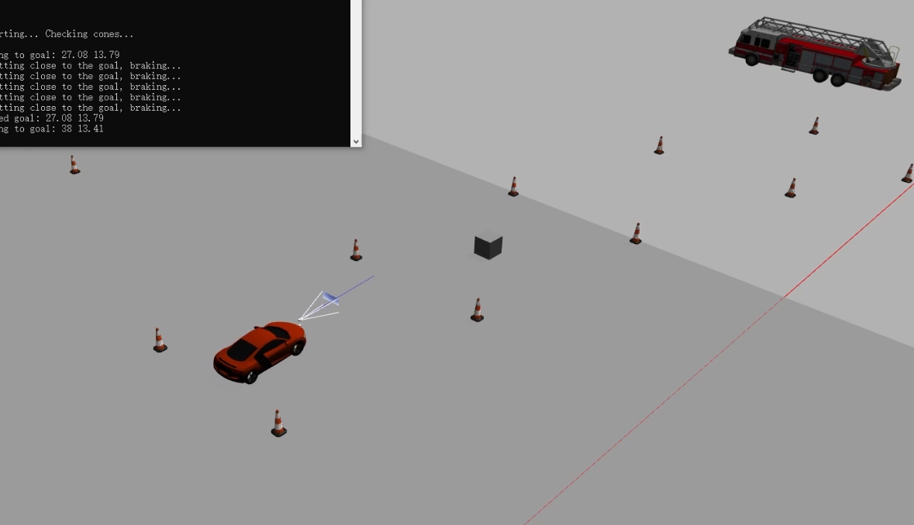
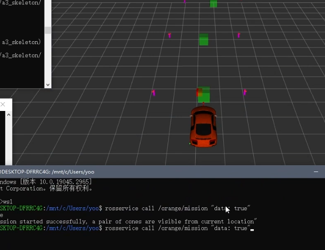
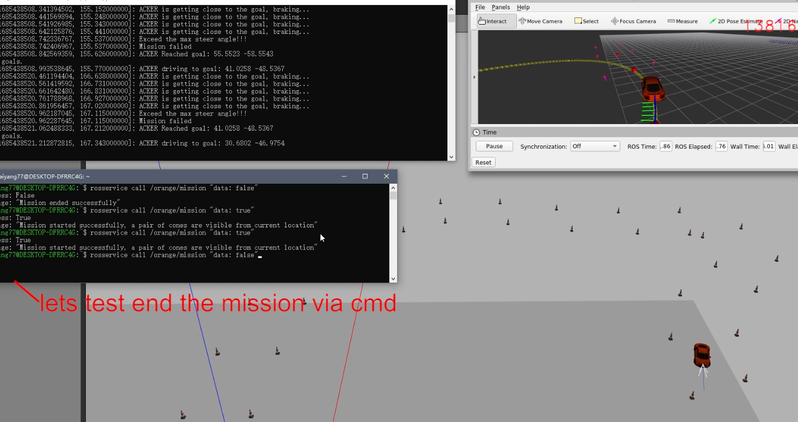

ROS-Based Autonomous Ackermann Track Racing
A ROS autonomous driving pipeline using laser perception, cone-based road-centre validation, and Ackermann steering control to complete simulated racing laps in Gazebo and RViz.

Problem
Build a ROS node that uses laser scan data to detect cones, validate road-centre goals, and autonomously complete a simulated racing lap.
My Role
Designed the full ROS perception-control pipeline — laser-based cone validation, steering logic, braking behaviour, and mission service lifecycle.
Outcome
Stable multi-goal waypoint tracking with real-time steering updates, braking control, and service-based mission management across full lap completion.
ROS System Design
The system runs as a ROS node subscribing to vehicle odometry, laser scan data, and externally supplied goal waypoints. Control outputs are published as steering, throttle, and brake commands to the Ackermann platform driver.
A service interface handles mission lifecycle — the vehicle stays idle until explicitly activated, then executes the lap autonomously and returns to idle on completion or abort.
- Subscribers: odometry, LaserScan, goal waypoints
- Publishers: AckermannDriveStamped control commands
- ROS service: start / stop mission with state transitions

Cone Perception & Goal Validation
Front-facing laser scan data is processed to detect cone pairs defining the track boundaries. The perception module then validates whether each candidate goal waypoint falls within the drivable corridor formed by the detected cone boundaries.
Only verified road-centre waypoints are passed to the controller, preventing the vehicle from pursuing invalid or out-of-bounds trajectories during the lap.
- LiDAR point clustering to identify cone positions
- Geometric corridor check: goal must lie between cone pair
- Invalid goals silently skipped — next valid goal selected

Ackermann Control Execution
The controller continuously computes steering angle toward the next validated goal using heading error. Throttle and braking are modulated based on proximity to the waypoint and the magnitude of steering demand — slowing into tight turns and accelerating on straights.
- Proportional heading error → steering angle mapping
- Speed modulation: throttle reduced at high steering demand
- Braking triggered within a configurable goal arrival radius
- Safeguards for extreme steering angles and mission abort
Key result: stable waypoint tracking maintained through multi-turn lap sequences with no manual intervention required.

Mission Service & Testing
A ROS service endpoint manages explicit start and stop of the racing mission. This enables controlled lifecycle transitions, easier debugging between runs, and safer simulation resets without restarting the node.
Service testing confirmed correct idle → running → stopped state transitions while preserving vehicle stability at each boundary.
- rosservice call interface for mission start / abort
- State machine: IDLE → RUNNING → STOPPED
- Vehicle holds position on stop; resumes cleanly on restart

Key Findings
The most valuable engineering lesson was designing a modular autonomy stack where sensing, goal validation, control, and mission lifecycle management could each be tested independently yet operate robustly as a unified system. Decoupling the perception layer from the controller made debugging significantly faster — a bad waypoint was immediately identifiable as a perception issue rather than a control one.
This project strengthened my experience in ROS node architecture, real-time perception-control integration, laser-based geometric reasoning, and simulation-oriented validation workflows.